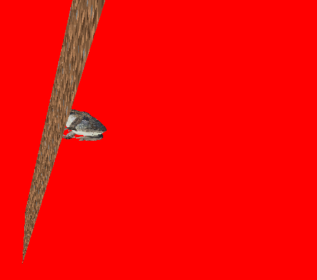

Darwinian simulation with OpenGL

Introduction
This simulation was written as part of a college course called “Object Oriented Programming.” The functionalities of the alpha version of my simulation.
- Animals are generated at random on the board, which are loaded from .obj files (this allowed me to learn the basics of 3D Graphics),
- One mouse click is one tick in the game.
- Every tick, one animal can turn or move (this depends on the genotype that is input into the simulation),
- When an animal enters a randomly generated plot of grass, the grass is eaten and a new one randomly appears,
- The map is theoretically infinite (as long as there is enough memory), it expands as the animals move.
More interesting mechanics that I implemented:
- Loading 3D models from a .obj file,
- Animation system,
- Map generation.
Loading three-dimensional models
In order for us to load three-dimensional models, we should know how they are made in the first place. Models in .obj format are nothing more than a collection of triangles in space. In the .obj file itself, we are interested in 4 blocks of information. The first block is the coordinate triples (X,Y,Z) responsible for the vertices of our triangles, denoted by the letter ‘v’. The second block denoted by ‘vt’ are pairs of coordinates (X,Y), often referred to as uvs. These are coordinates with respect to the plane with texture graphics, so that the program knows how to fit textures to the triangle. The third block denoted by ‘vn’ are normal vectors, which are used for shadows, for example. We know from algebra that it is perpendicular to the plane, this block is not important for us because we are not using shadows for now. The last block is referred to by the letter f. In each line are given the indices of the vertices that form two triangles in space.

A more detailed explanation on the obj format
Once we know what an obj extension is, just importing models into our program is not all that difficult.
In order to generate our graphics on the screen we will need 3 arrays, which we will later pass to load them into VAO. These are an array of the coordinates of our vertices, an array of our uvs, and an array of the indices of our vertices that make up the triangle.
Animation system
The animation system is simpler than it looks. An animation is nothing more than a small movement repeated every frame of the program. If we know in what position our object is and what position we are aiming at, we can easily calculate the vector in the direction of which our object is moving and every program frame add a small part of our vector, until our object is in the final position +/- a small value (this is because we may ‘miss’ our final vector).
Map generation.
Generating a map is not difficult either. The map is simply a cuboid (without some walls to make the program use less resources). I check if our map should be generated and if so, I adjust the uvs to whether it should be dirt or should be grass. Then if the animal enters the grass then the map is generated once again so that I change the appropriate uvs to display dirt instead of grass.
